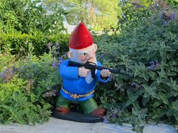
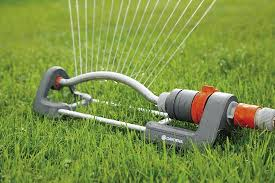
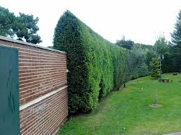

<ion-view view-title="Fotografies">
          
        <ion-content class="has-header">

        <div class="content padding">
           <button class="button  icon-left ion-plus-circled">Nova Foto</button>           
        </div>
     <div class="list">

        <a 
           ng-click="goToFoto()"
           href="#"
           class="item item-thumbnail-left">

          
          <h2>Nan jardi enfadat</h2>
          <h4>22-05-2015 14:34</h4>
        </a>
          <a 
           href="../img/fotos/riego.jpeg"
           class="item item-thumbnail-left">

          
          <h2>Sistema de reg funcionant</h2>
          <h4>22-05-2015 17:02</h4>
        </a>
          <a 
           href="../img/fotos/seto.jpeg"
           class="item item-thumbnail-left">

          
          <h2>Tanca porta podada</h2>
          <h4>22-05-2015 18:17</h4>
        </a>

      </div>
       
    
    </ion-content>
</ion-view>
